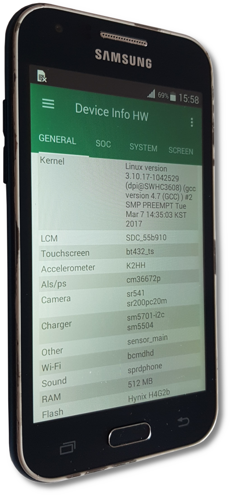

Samsung Galaxy J1 (samsung-j13g)
|
 Samsung Galaxy J1 on stock ROM with Device Info HW app open | |
| Manufacturer | Samsung |
|---|---|
| Name | Galaxy J1 |
| Codename | samsung-j13g |
| Released | 2015 |
| Category | testing |
| Original software | Android |
| Original version | 4.4.4 |
| Hardware | |
| Chipset | Spreadtrum SC7727S |
| CPU | 2x 1.2GHz ARM Cortex-A7 |
| GPU | Mali-400 |
| Display | 480x800 TFT |
| Storage | 4 GB |
| Memory | 512 MB |
| Architecture | armv7 |
{kind=link}
| USB Networking | |
|---|---|
| Flashing | |
| Touchscreen | |
| Display | |
| WiFi | |
| FDE | |
| Mainline | |
| Battery | |
| 3D Acceleration | |
| Audio | |
| Bluetooth | |
| Camera | |
| GPS | |
| Mobile data | |
| SMS | |
| Calls | |
| USB OTG | |
| NFC | |
| Accelerometer | |
|---|---|
| Magnetometer | |
| Ambient Light | |
| Proximity | |
| Hall Effect | |
| Barometer | |
| Power Sensor | |
| Camera Flash | |
|---|---|
| Keyboard | |
| Touchpad | |
| USB-A | |
| HDMI/DP | |
| Ir TX | |
| Ir RX | |
| Stylus | |
| Haptics | |
| Ethernet | |
| FOSS bootloader | |
DISCLAIMER
THIS ARTICLE/PAGE IS CURRENTLY "UNDER CONSTRUCTION" (BEING WORKED ON)! WHATEVER YOU SEE HERE WILL CHANGE!
Users owning this device
- Gentooza
- Nullify (Notes: Working w/ SSH w/o fully-working graphics)
- Ungeskriptet (Notes: Broken home button, entering download mode with USB Jig)
Networking
Via USB
Commands for Target Device via SSH (Samsung Phone (SM-J100H)):
NOTE: [ipaddress] is just your phone's inet IPv4 Address found when using ip a. Your Device's IPv4 should be there. for me, when using ip a, my phone was identified as enp0s20f0u2u3
On Target Device (Via SSH):
ip route add default via [ipaddress]
echo nameserver 1.1.1.1 > /etc/resolv.conf
On Host Machine:
sudo sh -c 'sysctl net.ipv4.ip_forward=1 && iptables -A FORWARD -m conntrack --ctstate ESTABLISHED,RELATED -j ACCEPT && iptables -A FORWARD -s [ipaddress]/24 -j ACCEPT && iptables -A POSTROUTING -t nat -j MASQUERADE -s [ipaddress]/24 && iptables-save'
Audio
to check for audio drivers, type aplay -l and you should get something like the following:
**** List of PLAYBACK Hardware Devices ****
card 0: sprdphone [sprdphone], device 0: HiFi sprd-codec-i2s-0 []
Subdevices: 1/1
Subdevice #0: subdevice #0
card 0: sprdphone [sprdphone], device 1: Voice sprd-codec-vaudio-1 []
Subdevices: 1/1
Subdevice #0: subdevice #0
card 0: sprdphone [sprdphone], device 4: Dfm sprd-codec-fm-4 []
Subdevices: 1/1
Subdevice #0: subdevice #0
card 1: alli2s [all-i2s], device 0: i2s.0 null-codec-dai-0 []
Subdevices: 1/1
Subdevice #0: subdevice #0
card 1: alli2s [all-i2s], device 1: i2s.1 null-codec-dai-1 []
Subdevices: 1/1
Subdevice #0: subdevice #0
card 1: alli2s [all-i2s], device 2: i2s.2 null-codec-dai-2 []
Subdevices: 1/1
Subdevice #0: subdevice #0
card 1: alli2s [all-i2s], device 3: i2s.3 null-codec-dai-3 []
Subdevices: 1/1
Subdevice #0: subdevice #0
card 2: VIRTUALAUDIOW [VIRTUAL AUDIO W], device 0: SAUDIO PCM [SAUDIO PCM]
Subdevices: 1/1
Subdevice #0: subdevice #0
card 3: saudiovoip [saudiovoip], device 0: SAUDIO PCM [SAUDIO PCM]
Subdevices: 1/1
Subdevice #0: subdevice #0
To get the audio working (refer to the output from aplay -l) create or edit the following script.
open ~/.asoundrc with the text editor of your choice and get the following into that file
pcm.!default {
type plug
slave {
pcm "hw:0,0"
}
}
ctl.!default {
type hw
card 0
}
Desktop Environments
Solution to and Reason of Desktop Environments and/or Managers Constantly Crashing
If your screen goes off "PostmarketOS Loading..." Screen and stays blank or if your Desktop Manager and/or Desktop Environment keeps crashing or if your DE fails to launch or continue to run properly, make sure to take a look at the way your Framebuffer manages the colors as the first successfully ported device has been found with the Red and Blue colors swapped.
This is due to the buffer using SPRDFB_IN_DATA_TYPE SPRD_IN_DATA_TYPE_ABGR888 instead of the correct format of SPRDFB_IN_DATA_TYPE SPRD_IN_DATA_TYPE_BGR565 within the /drivers/video/sprdfb/sprdfb_main.c file. The patch file for this should already be existant within the installation package (that is currently soon to be) attached. If the patch (usually named sprdfb-fix-swapped-colors.patch) is not found or is non-existant, do consider taking a look at other linux-samsung-j folders such as the linux-samsung-j1mini3g (where the swapped framebuffer colors patch came from).
Desktop Environment not loading
When using a Desktop Environment, make sure what Desktop Manager is the Desktop Environment is using. As it will be crutial to be able to force CanGraphical to Yes or to a positive state/value by uncommenting and "falsifying" the logind-check-graphical value to false (which skips the graphical checking, forcing the DM to start-up regardless, forcing the DE to boot-up).
DO NOTE: That Each Desktop Mangers have their own config file location. For instance: LightDM has its configuration file under /etc/lightdm firectory with the file having the name lightdm.conf.
CanGraphical Issue Page here => [1]